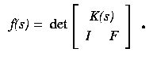

|
 |
First, our choice of F as local coordinates for the Grassmannian is not canonical, and any other choice will give an equivalent system of polynomials. We caution that for some choices of the parameters s1, s2, ..., smp, there may be solutions that do not lie in the chosen coordinate patch.
More interesting is the matrix K(s). The first row consists of all monomials of degree less than m+p, and subsequent rows are derivatives of the first. The first row is a parameterization of a rational normal curve in Cm+p, and so it follows that K(s) is the m-plane osculating this curve. Since all parameterized rational normal curves are projectively equivalent, we are free to replace K(s) in the definition of f(s) above by any m-plane osculating a parameterized real rational normal curve. (This is equivalent to choosing different local coordinates for the Grassmannian.)
Reparameterizing the original rational normal curve, we may assume that up to 3 of the si are any fixed points on the projective line. It is most useful to fix one to be 0 and one to be the point at infinity. Doing so, we may reduce the parameters by 2, and choose local coordinates for the set of p-planes H which meet the m-plane osculating at 0 and infinity. For details on the selection, see Section 2.5 of "Real Schubert Calculus: Polynomial systems and a conjecture of Shapiro and Shapiro". We have a Maple script that will generate local coordinates.